¿Por Que? - Descenso a la Locura
Prologo
En este cuento de diez capitulos van a conocer la historia de un hombre que por sus desiciones, descendio a la locura. hechos que si bien se pudieron haber evitado, lo pusieron contra la espada y la pared a cada instante, el no haber actuado lo habria destrozado en muchas formas. Y es por eso que te pregunto, querido lector, ¿que hubieses hecho tu?
A Continuacion les dejo un resumen del cuento completo, que pueden encontrar en mi página de
Facebook, haciendo click en la primera imagen:
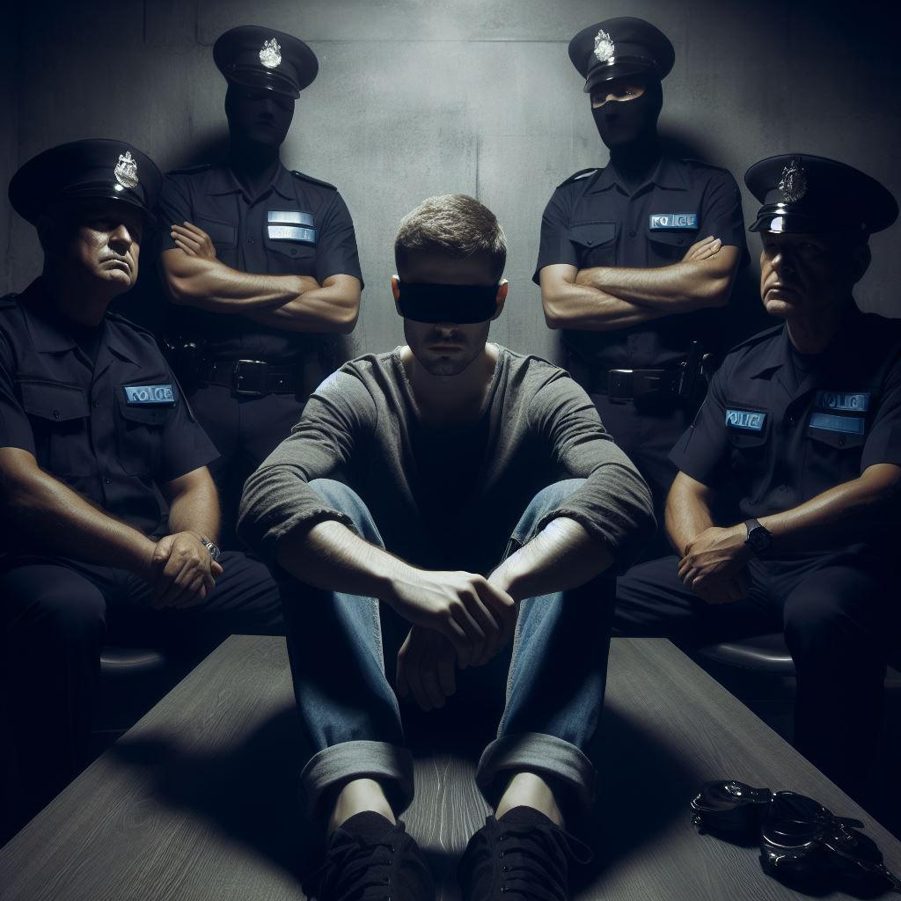
Capitulo 1
Un Hombre, no, Un muchacho que luego de una funesta y oscura noche su vida cambiaria para
siempre, enfrentado a sus amigos, con perdida de memoria
y despertando en una comisaria rodeado de policias que lo miraban de forma aterradora y amenazante, rodeado de
recuerdos que lo atormentaban a cada segundo, junto con
su corazon latiendo cada vez mas fuerte, tanto que parecia querer salir de su cuerpo.
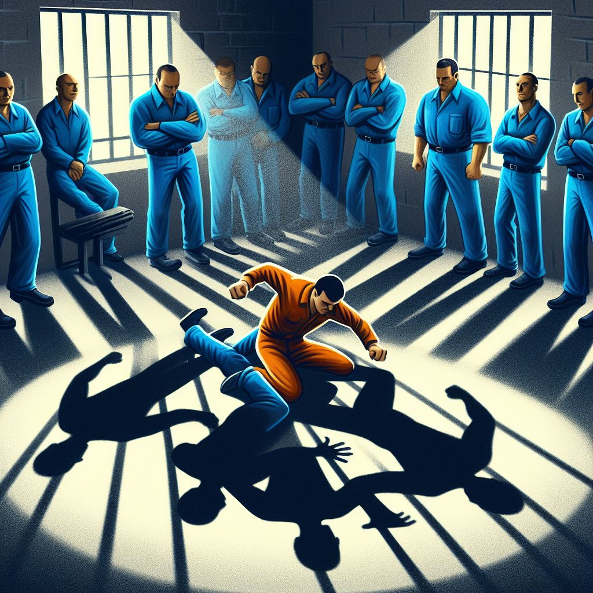
El cielo y el Infierno en la vida de aquel muchacho, un beso en la mejilla y una chica a la cual
habia salvado, pero que a pesar de todo, los problemas
que se acrecenta, en prision y su mente fragil que cada vez se tuerce mas a cada segundo por las pesadillas y
los traumas vividos. Su mente lo lleva a pensar que, el fin
justifica los medios, y eso lo lleva a un pozo donde la locura actua como agua negra y lodosa que amenaza con
taparlo.
Un angel le tiende la mano que lo saca del infierno, es su droga, su todo, cuando esta con ella
el dolor y la maldad desaparecen, pero a la vez juntos se
potencian. Ambos se perderian mutuamente en la locura insondante de la eternidad mientras un hilo invisible los
unia, y este se iba haciendo mas corto cada vez, esperando
el momento adecuado para unirlos, como si se tratase de un encendedor encendido y un enorme tanque de gasolina.
Capitulo 2
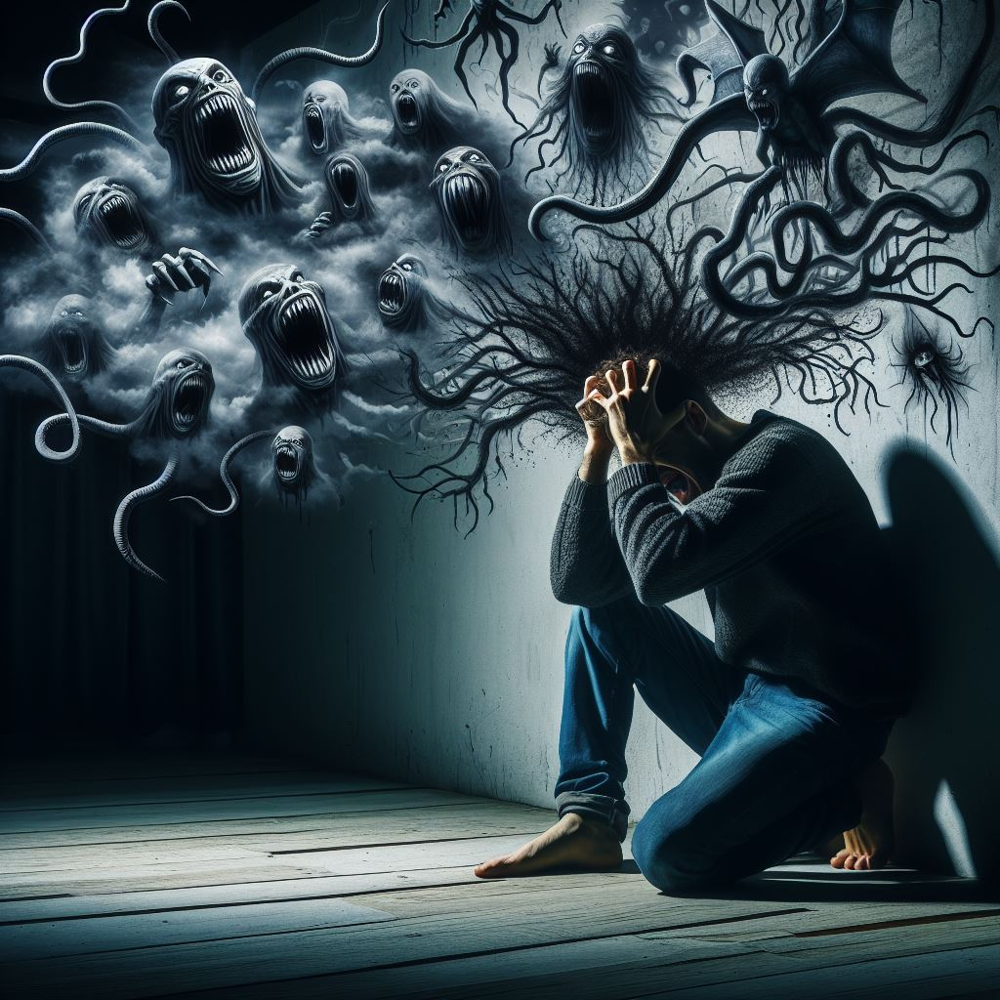
Sombras, pensamientos recurrentes y oscuros que atemorizan a un ser, un heroe solitario y
exiliado que es presa de pirañas mediaticas y un ambiente que chupa su sangre mientras se hunde en su mente y en
ataduras de las que quiere deshacerse sin importar el costo o a quien lastime en el intento.
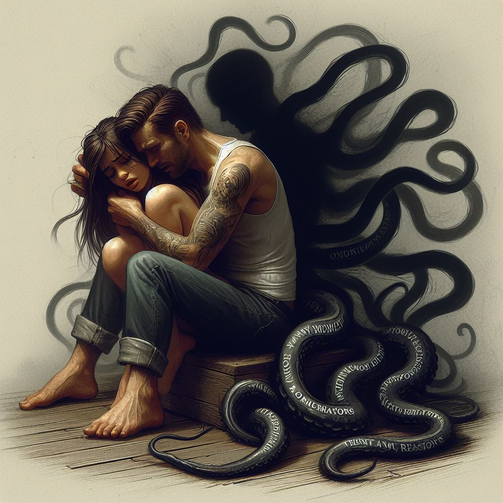
La explosion habia ocurrido, se convierten en dos monstruos, el heroe y el angel no son mas
quebrabaaberraciones oscuras y desatadas, psicoticos,
que acechan cada rincon de la ciudad, estan solos, pero juntos, y aquel hilo que los unia fue quemado por cada
uno de su extremo con fuego ardiente y rojo, ellos se quemaron, pero no importó.

Los persiguen, tanto las pesadillas como los monstruos y la policia que le hace preguntas,
es el heroe, pero uno venido a menos que esta mancillado por haber estado en prision en una sociedad
que lo juzga. Solo Valentina lo atesora y entiende, las locuras que cometeran son tan oscuras como sus almas.
Capitulo 3
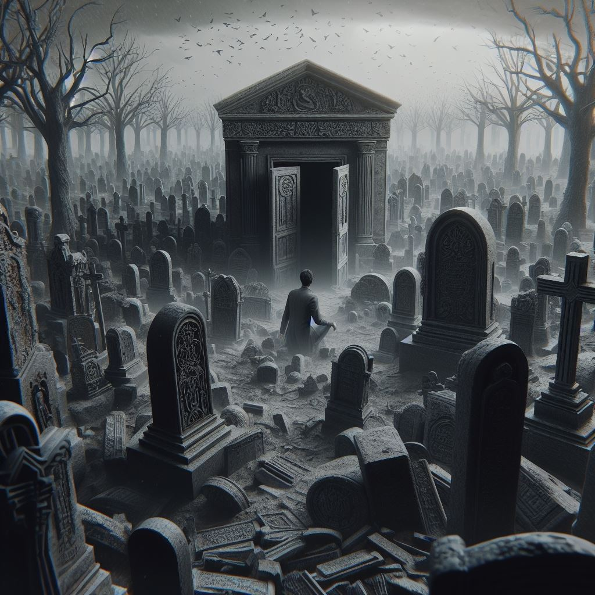
La locura solo se calma asesinando, solo ajusticiando a los malvados e injustos se calman las
pesadillas
y aquellos pensamientos paranoicos y oscuros. Solo quieren cometer lo que deban para estar en pas, sin importar
el coste.
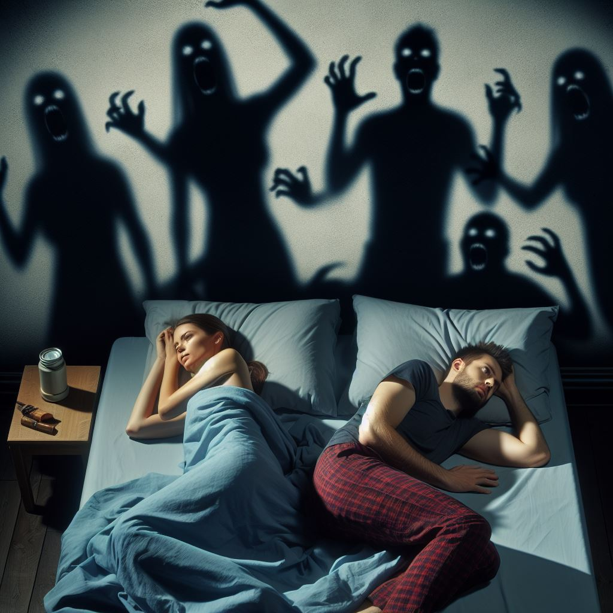
La sangre impregna la sabana blanca que habia cubrido toda la vida de nuestro heroe, todo se
habia acabado y el queria encontrar al culpable, estaba aterrado per oa la vez con la determinacion suficiehte
para acabar con la
locura en la que se habia convertido.
El triste e inveitable final. Espero puedan leerlo completo en Faceboo, Gracias!
Si te gusto el Resumen te invito a hacer click en la
imagen para ir a mi Facebook o Instagram para leer este y otros cuentos completos o en este link para ir arriba y continuar navegando.
Capitulo 1
Un Hombre, no, Un muchacho que luego de una funesta y oscura noche su vida cambiaria para siempre, enfrentado a sus amigos, con perdida de memoria y despertando en una comisaria rodeado de policias que lo miraban de forma aterradora y amenazante, rodeado de recuerdos que lo atormentaban a cada segundo, junto con su corazon latiendo cada vez mas fuerte, tanto que parecia querer salir de su cuerpo.
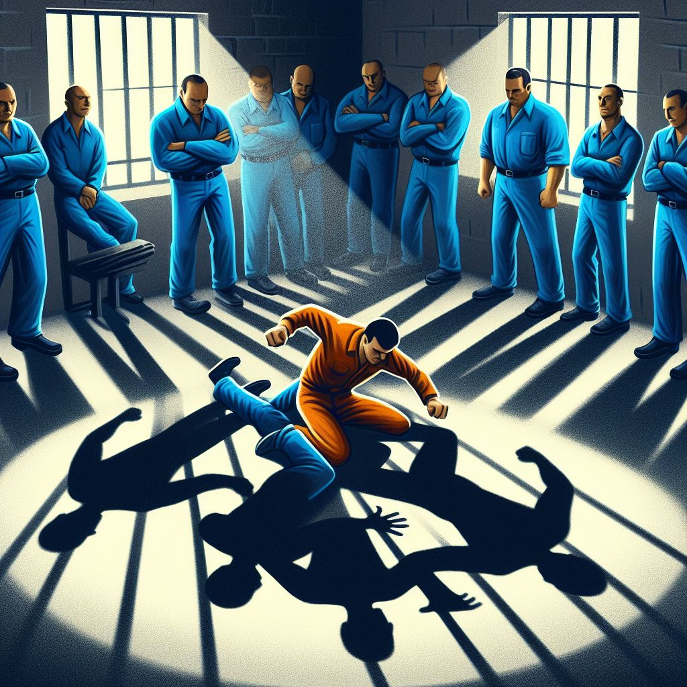El cielo y el Infierno en la vida de aquel muchacho, un beso en la mejilla y una chica a la cual habia salvado, pero que a pesar de todo, los problemas que se acrecenta, en prision y su mente fragil que cada vez se tuerce mas a cada segundo por las pesadillas y los traumas vividos. Su mente lo lleva a pensar que, el fin justifica los medios, y eso lo lleva a un pozo donde la locura actua como agua negra y lodosa que amenaza con taparlo.
Un angel le tiende la mano que lo saca del infierno, es su droga, su todo, cuando esta con ella el dolor y la maldad desaparecen, pero a la vez juntos se potencian. Ambos se perderian mutuamente en la locura insondante de la eternidad mientras un hilo invisible los unia, y este se iba haciendo mas corto cada vez, esperando el momento adecuado para unirlos, como si se tratase de un encendedor encendido y un enorme tanque de gasolina.
Capitulo 2
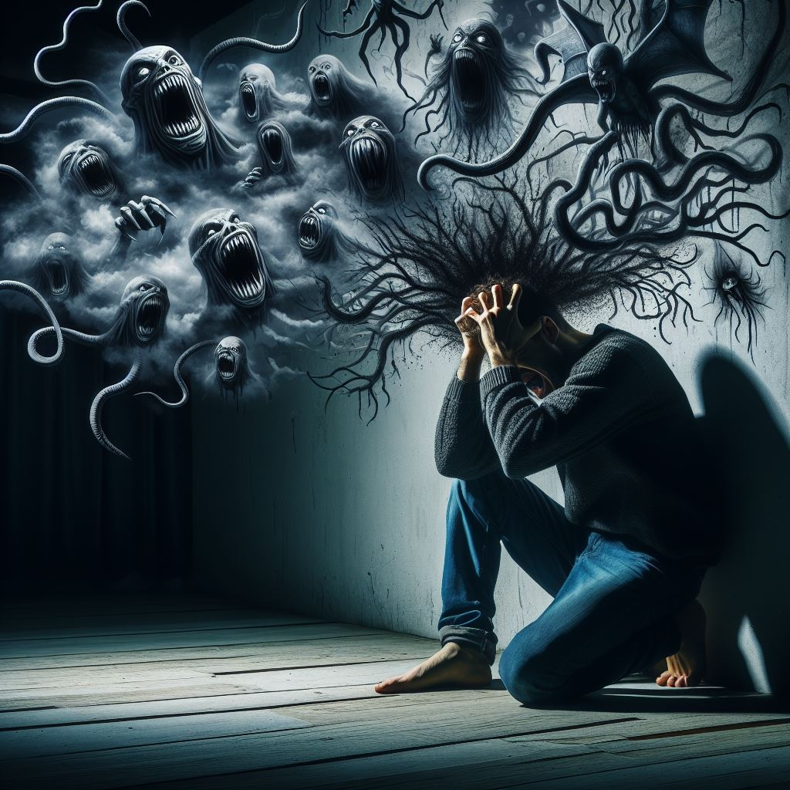Sombras, pensamientos recurrentes y oscuros que atemorizan a un ser, un heroe solitario y exiliado que es presa de pirañas mediaticas y un ambiente que chupa su sangre mientras se hunde en su mente y en ataduras de las que quiere deshacerse sin importar el costo o a quien lastime en el intento.
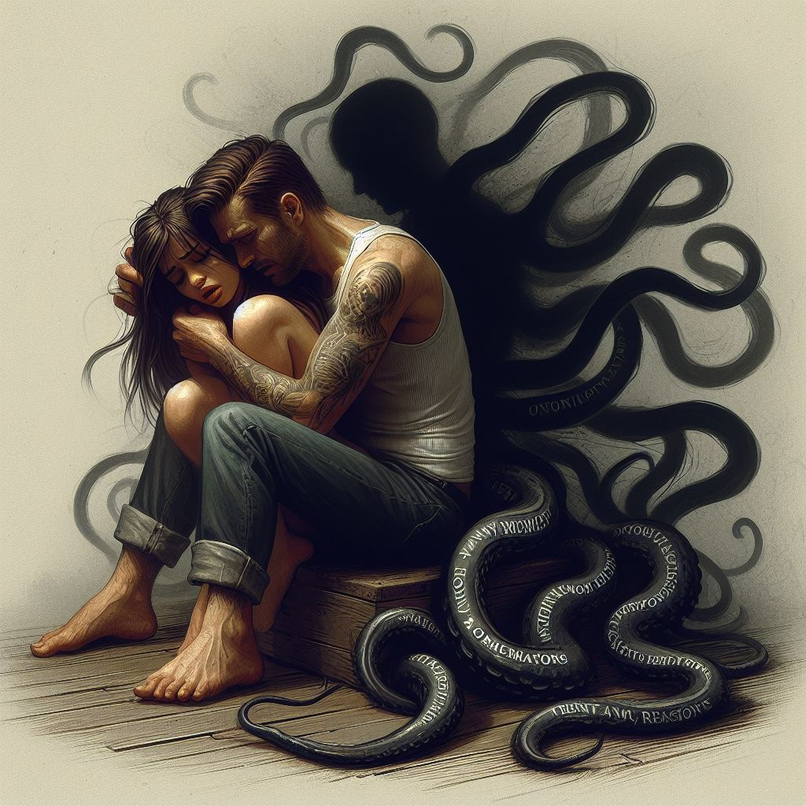La explosion habia ocurrido, se convierten en dos monstruos, el heroe y el angel no son mas quebrabaaberraciones oscuras y desatadas, psicoticos, que acechan cada rincon de la ciudad, estan solos, pero juntos, y aquel hilo que los unia fue quemado por cada uno de su extremo con fuego ardiente y rojo, ellos se quemaron, pero no importó.
Los persiguen, tanto las pesadillas como los monstruos y la policia que le hace preguntas, es el heroe, pero uno venido a menos que esta mancillado por haber estado en prision en una sociedad que lo juzga. Solo Valentina lo atesora y entiende, las locuras que cometeran son tan oscuras como sus almas.
Capitulo 3
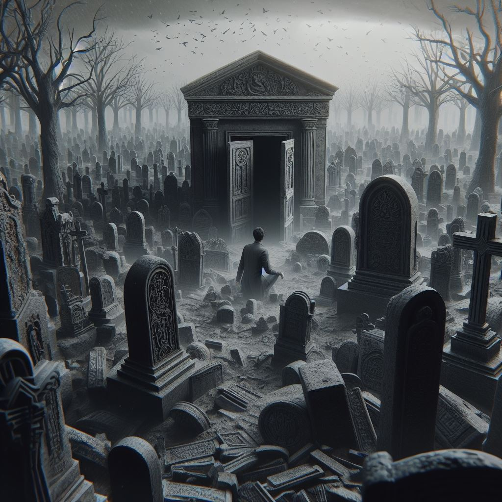La locura solo se calma asesinando, solo ajusticiando a los malvados e injustos se calman las pesadillas y aquellos pensamientos paranoicos y oscuros. Solo quieren cometer lo que deban para estar en pas, sin importar el coste.
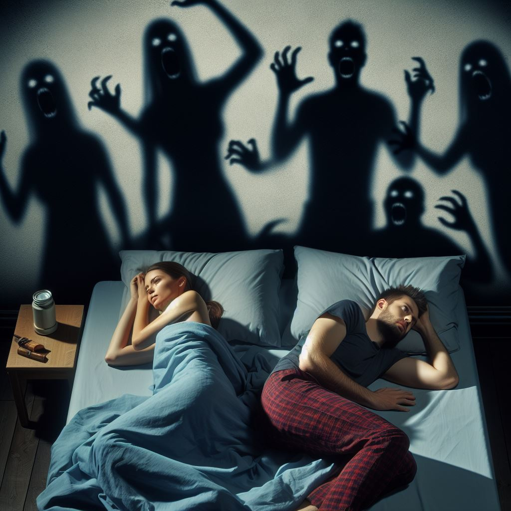La sangre impregna la sabana blanca que habia cubrido toda la vida de nuestro heroe, todo se habia acabado y el queria encontrar al culpable, estaba aterrado per oa la vez con la determinacion suficiehte para acabar con la locura en la que se habia convertido.
El triste e inveitable final. Espero puedan leerlo completo en Faceboo, Gracias!